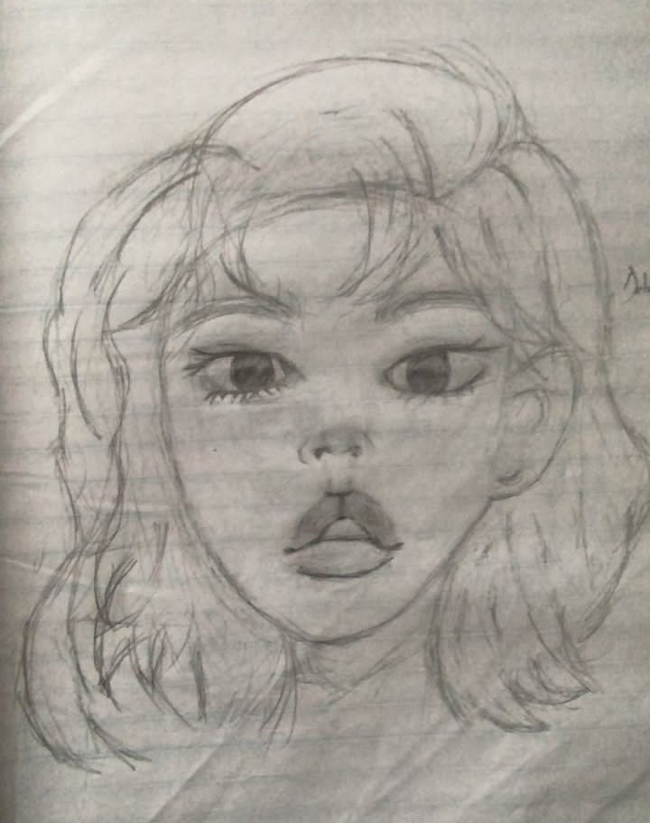
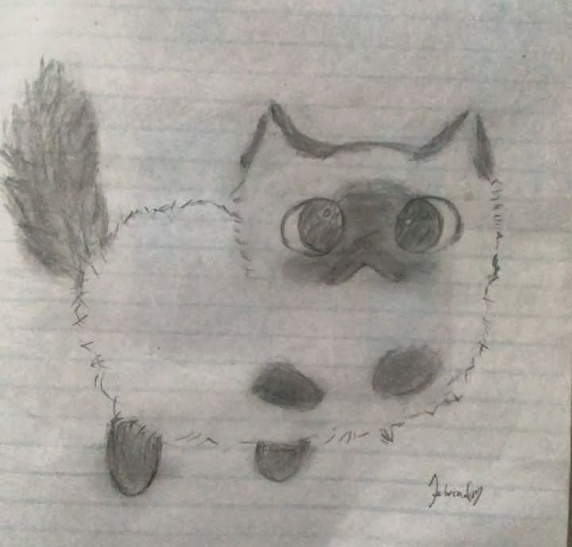
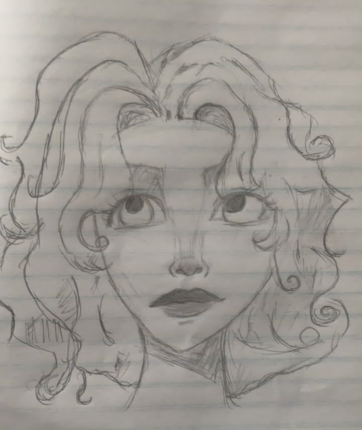
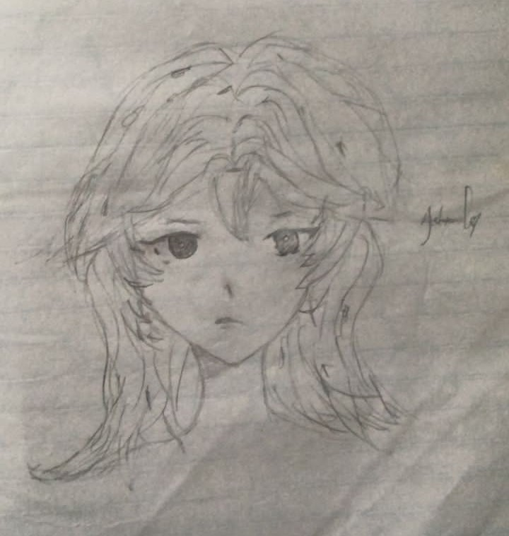
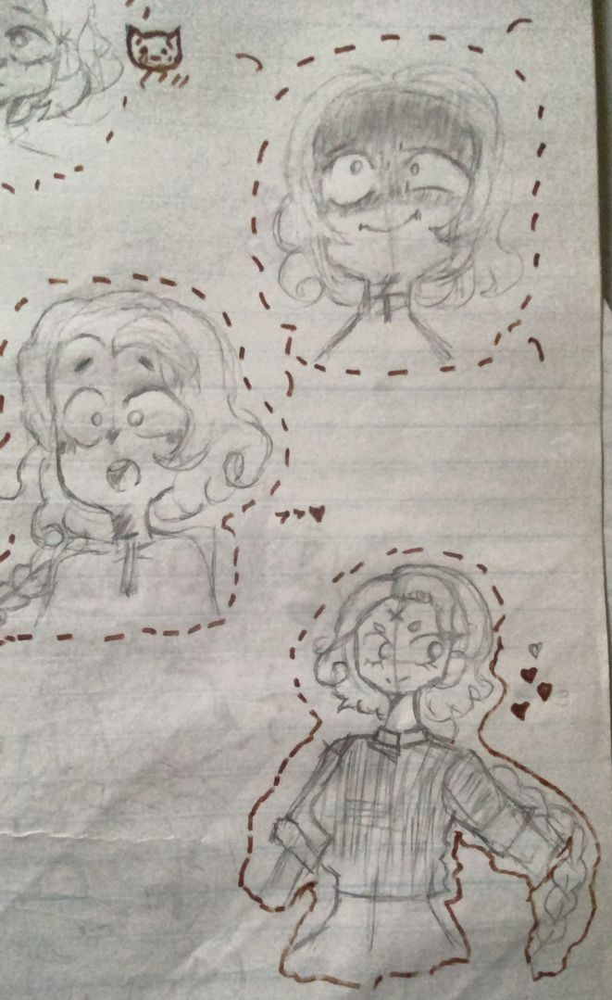

100lvl | Pencil Art
I am a pencil sketch artist with a focus on detail and expression. I like woking in grayscale because it strips everything down to what really matters. My style is clean and intentional, and I let the work speak or itself.